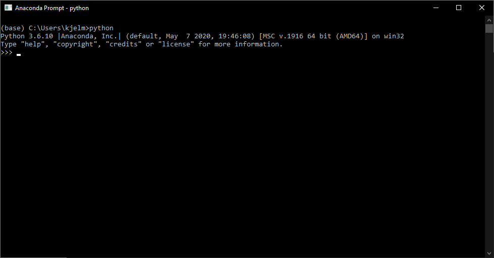
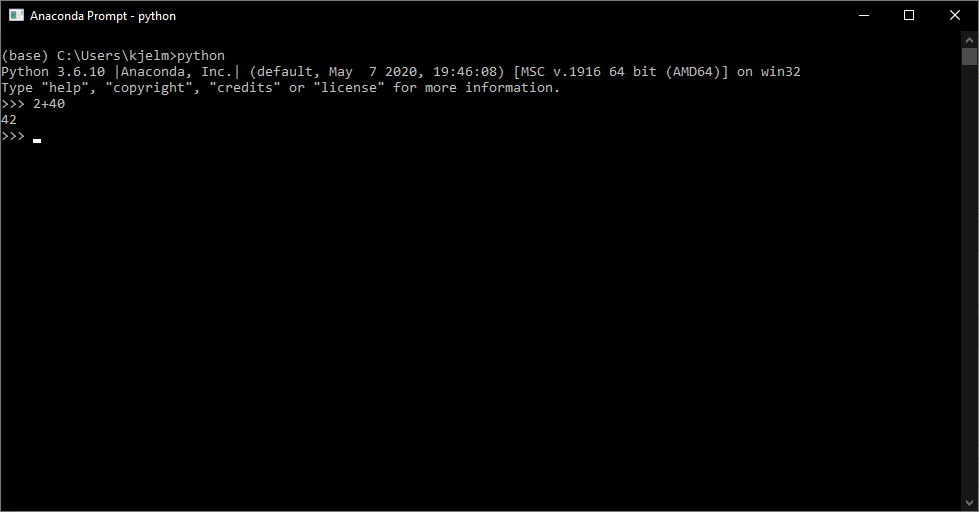
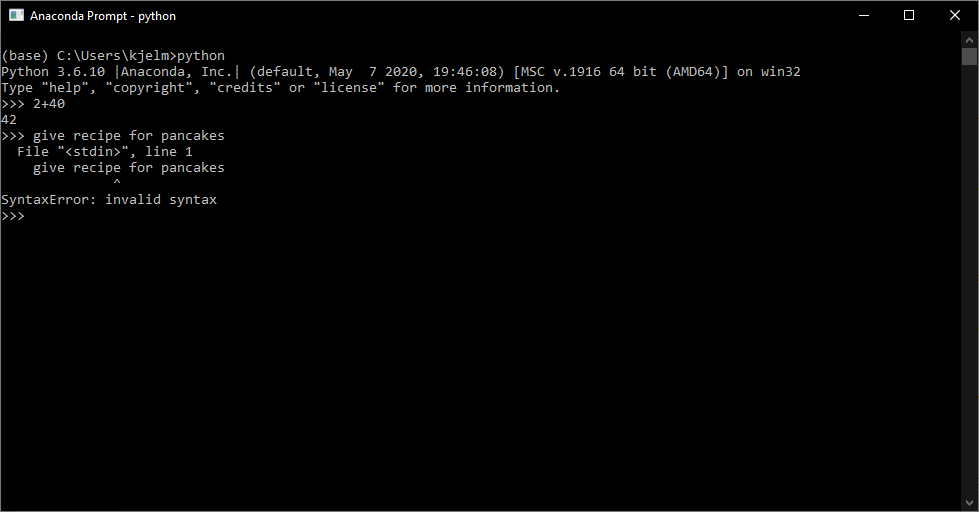

For at bruge Python skal vi “tale” Python. Man arbejde med Python ved at skrive kommandoer i Python-sproget. Hvis Python forstår din kommando udføres den. Hvis ikke, får du en eller anden form for fejl. Man kan se Python som et meget bogstaveligt og pernitten sprog: Kommandoer skal skrives på helt bestemte måder for at Python kan forstå, hvad du beder om.
Barberes Python ned til sine grundsten består det ikke af mere end en “interpreter” (fortolker). Alle programmeringssprog er bygget op om en fortolker, der “evaluerer” kommandoer. Inden for programmering vil evaluering sige, at sproget forsøger at forstå, hvad der står i en kommando.
Den “rene” installation af Python tilføjer fortolkeren til styresystemet, så man kan arbejde med Python gennem en terminal: 
I terminalen kan vi skrive en kommando og trykke “Enter” for at få fortolkeren til at evaluere. I nedenstående skrives kommandoen 2+42 hvilket Python evaluerer og giver outputtet 42:

Python forstår matematiske operationer og vil returnere resultatet af en udregning, når man skriver den ind.
I nedenstående forsøges at bede om en opskrift på pandekager. Det går knap så godt: 
Når Python ikke kan forstå kommandoen, returneres en fejl. Der findes et væld af fejltyper. I ovenstående gives en SyntaxError, fordi kommandoen er skrevet helt forkert (dette er dog ikke det eneste problem med denne kommando, men det er den første fejl, som fortolkeren støder på).
Selvom man kan arbejde med Python direkte i terminalen frarådes det meget kraftigt, da det er meget vanskeligt at gemme sit arbejde undervejs og svært at bevare overblik over sin kode og arbejde. Derfor arbejder man for det meste gennem et IDE (Integrated Development Environment). Et IDE er et program, som man kan arbejde med Python igennem, som ofte har forskellige funktioner og egenskaber til at hjælpe en bevare overblikket.
Her nævnes blot et mindre udvalg af IDE’er.
Spyder er bygget op omkring en “script-editor”. Et script er et dokument bestående af en række af Python kommandoer, som man kan sende til fortolkeren på én gang. I et script kan fx samles al det databehandlings- og analysearbejde, som man skal lave. Ved at køre scriptet udføres så al arbejdet. Script-editoren er indbygget med farvekoder, så man nemt kan adskille dele af koden samt automatiske forslag til kommandoer (Spyder 4 og frem).
Derudover giver Spyder en objekt-/variabeloversigt, så man kan se, hvad man har defineret og arbejder med; fx datasæt, resultater, osv.
Spyder er godt til de fleste ting og særligt, hvis man skal arbejde med længere scripts.
Spyder installeres sammen med Anaconda: https://www.anaconda.com/products/individual#Downloads
Jupyter Notebook er opbygget omkring en såkaldt “notebook”. En notebook i Jupyter Notebook kombinerer Python kode med almindelig tekst (Markdown). Jupyter Notebook egner sig særdeles godt, hvis man skal dokumentere sit kodearbejde undervejs, da man har mulighed for at skrive almindelig tekst, sætte billeder ind, lave tabeller osv. omkring sin kode.
Dette materiale er udarbejdet i Jupyter Notebook.
Jupyter Notebook installeres sammen med Anaconda: https://www.anaconda.com/products/individual#Downloads